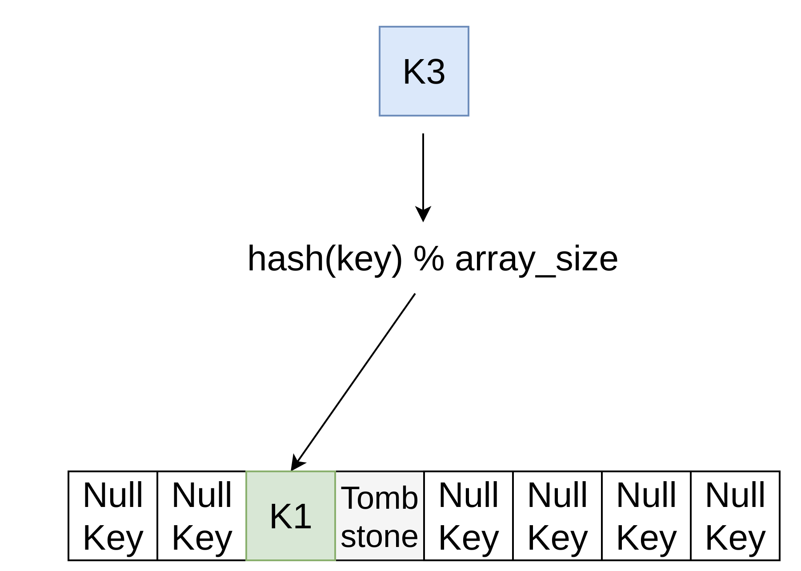

Hash Table Overview

1. Data Structures.
2. Hash Table Overview.
3. Hash Function.
4. Static Hashing Scheme
5. Static Hash Tables Overview
6. Dynamic Hashing Scheme.
1. Хранение внутренних метаданных.
2. Хранение основных данные таблиц.
3. Хранения временных структуры данных (Join, External sort, Aggregation).
4. Хранение индексов
Hash Table
Tree (B-Trees)
Организация данных
Как мы размещаем структуру данных в памяти/страницах и какую информацию необходимо хранить для поддержки эффективного доступа.
Конкурентный доступ
Как разрешить нескольким потокам одновременный доступ к структуре данных, не вызывая проблем.
Хеш-таблица реализует неупорядоченный ассоциативный массив, который сопоставляет ключи со значениями.
Использует хеш-функцию для вычисления слота в массиве, в котором можно найти желаемое значение.
Основные методы
1. Хеш-функции (Hash Functions).
2. Статическая схема хеширования (Static Hashing Scheme).
3. Динамические схемы хеширования (Dynamic Hashing Schemes).
Хеш-функция принимает любой ключ в качестве входных данных. Затем он возвращает целочисленное представление этого ключа.
Вывод функции детерминирован (т. е. один и тот же ключ всегда должен генерировать один и тот же хеш вывод).
Нас в первую очередь интересует скорость хеш функции, и ее распределение.
1. Не использовать identity-функцию для целочисленных типов.
2. Не использовать хеш-функции для строк (CityHash) для целочисленных типов.
3. Не использовать криптографические хеш-функции, если вас не атакуют. Например, вычисление SipHash ~980 MB/s. CityHash ~9 GB/s.
4. Не использовать устаревшие хеш-функции. FNV1a.
CRC-64 (1975) - используется в сетях для обнаружения ошибок.
MurmurHash (2008) - разработана как быстрая хеш-функция общего назначения.
Google CityHash (2011) - ускорение работы с короткими ключами (64 байта).
Facebook XXHash (2012) - от создателя сжатия zstd.
Google FarmHash (2014) - более новая версия CityHash с улучшенным коэффициентом коллизий.
Статическая схема хеширования — это схема, в которой размер хеш-таблицы фиксирован. Это означает, что если у СУБД заканчивается место для хранения элементов в хеш-таблице, она должна перестроить ее с нуля с таблицей большего размера.
Также это необходимо чтобы уменьшить количество коллизий.
1. Хеш-функция.
2. Способ разрешения коллизий.
3. Ресайз.
4. Способ размещения ячеек в памяти.

1. Метод цепочек (Chaining).
2. Открытая адресация (Open Addressing).
3. Хорошие в теории (Cuckoo hashing, Hopscotch hashing, 2-choice hashing). Обычно либо тяжело реализуемые, либо медленные за счет дополнительных фетчей из памяти.

Пример: std::unordered_map
1. Стабильность указателей на ключ, значение.
2. Возможность хранить большие объекты, неперемещаемые объекты.
3. Хорошо работает с плохой хеш-функцией, высоким load factor.
4. Очень сильно тормозит. Нагружает аллокатор (даже просто вызов функции дорого для hot path).
Линейный пробы (Linear probing). Пример ClickHouse HashMap.
Квадратичные пробы (Quadratic probing). Пример: Google DenseHashMap.
1. Хорошая кэш-локальность.
2. Нужно аккуратно выбирать хеш-функцию.
3. Нельзя хранить большие объекты. Сериализуем в арену и храним указатели на них.
1. По степеням двойки. Быстрое деление по модулю.
size_t place = hash & (size - 1)
2. На размер простого числа близкого к степени двойки. Медленное деление даже с constant switch, libdivide но есть ещё fastrange.
0.5 хороший вариант для линейных проб с шагом 1.
ClickHouse HashMap, Google DenseHashMap использует 0.5.
Abseil HashMap использует 0.875.

Просить клиента выбрать ключи для пустого значения и удаленного.
Отдельно обрабатывать пустое значение и не хранить его в хеш-таблице.

Cжатое хранения метадаты и данных.

Предыдущие хеш-таблицы требуют, чтобы СУБД имела информацию о количество элементов, которые хочет поместить в хеш-таблицу.
В противном случае периодически будет происходить расширение хеш-таблицы.
Динамические хеш-таблицы изменяют свой размер по требованию.
Быстрые структуры данных, поддерживающие поиск O(1), которые используются во всех внутренних компонентах СУБД.
Компромисс между скоростью, потреблением памяти, гибкостью.